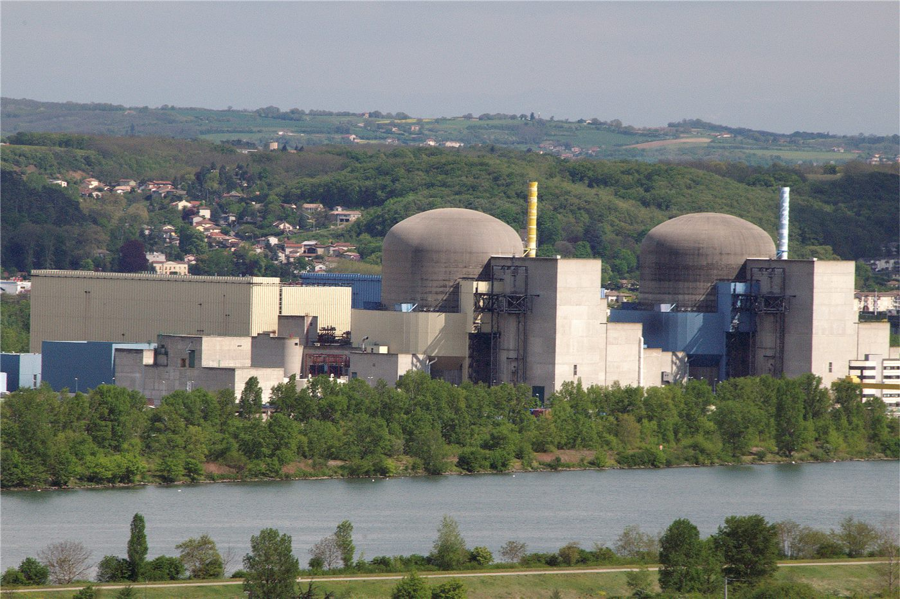

자포리자 원전 직원 버스정류장에서 드론 폭발… 16명 사상
국제원자력기구(IAEA)는 18일 오전 6시께 우크라이나 자포리자 원전으로 출근하는 직원들이 이용하는 버스정류장에서 드론이 폭발해 직원과 협력업체 인력 16명이 사상했다고 밝혔다. 이 가운데 1명이 숨지고 3명이 중상을 입었다.
손승종 기자 · 2026.08.28
橋국제

IAEA는 원전 소장이 현지 주재 IAEA 팀에 이같이 통보했다고 전하며, 이번 사건을 이 발전소가 겪은 가장 심각한 사고로 규정하고 공격을 규탄했다. 발전소 산업단지 내부에서도 추가 공격이 있었으나, 현재까지 원자력 안전·보안 설비의 직접적 손상은 보고되지 않았다.
광고 문의 · 300×250자포리자 원전은 유럽 최대 규모의 원자력 발전소로, 원자로 6기를 갖추고 있다. 2022년 이후 통제권을 둘러싼 상황이 이어지면서 모든 원자로는 정지 또는 냉온정지 상태로 유지돼 왔다. 다만 사용후핵연료 냉각과 계측 설비 유지에는 외부 전력과 인력이 계속 필요하다.
인력의 안전은 원자력 안전의 전제 조건이다. 교대 근무자가 출근하지 못하면 냉각 계통 감시와 정기 점검 일정이 흔들리고, 이는 설비 손상 없이도 위험을 높인다. IAEA가 인력 이동 경로에 대한 공격을 특히 강조한 이유다.
IAEA는 사건 이후 현장 팀의 관측 범위를 넓히고 추가 정보를 확인 중이라고 밝혔다. 책임 소재에 관해서는 언급하지 않았다.
원전 안전을 둘러싼 협의는 그동안 여러 차례 시도됐으나 구속력 있는 합의로 이어지지 못했다. 이번 사건이 논의 재개의 계기가 될지는 아직 알 수 없다.
출처·참고 (사실 확인용 — 본문은 직접 재작성)
· IAEA·Reuters·경향신문·문화일보 (2026.08.18)
· IAEA·Reuters·경향신문·문화일보 (2026.08.18)